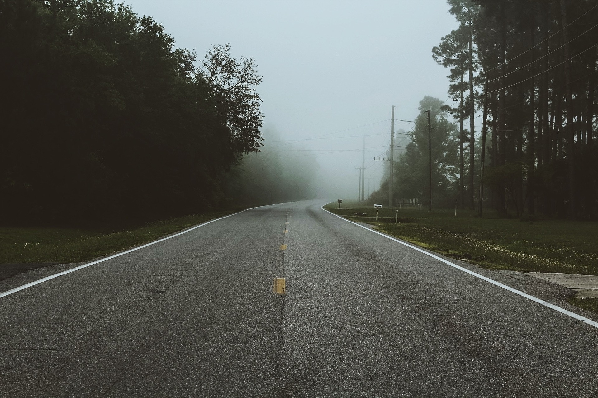

Interest

Technology
Technology is growing daily, so it's really imporatant we keep up with it. Technology does not only bring our tech side out, but also keeps us healthy. From inventing a heart defibrillator to building a nice website.
Music is life
In my oponion music has no language, no borders and all freedom. I enjoy all type of music. I like to hear people's expression, from vocals to drums and beats

Exploring
I have always enjoyed visiting old places and discovering new places.
Exploring is not only a stress relieve for me, but also a where I find peace. From beaches to hiking, and enjoying a nice place to eat. All this is needed in life, since we all need to find the balance between work and self peace